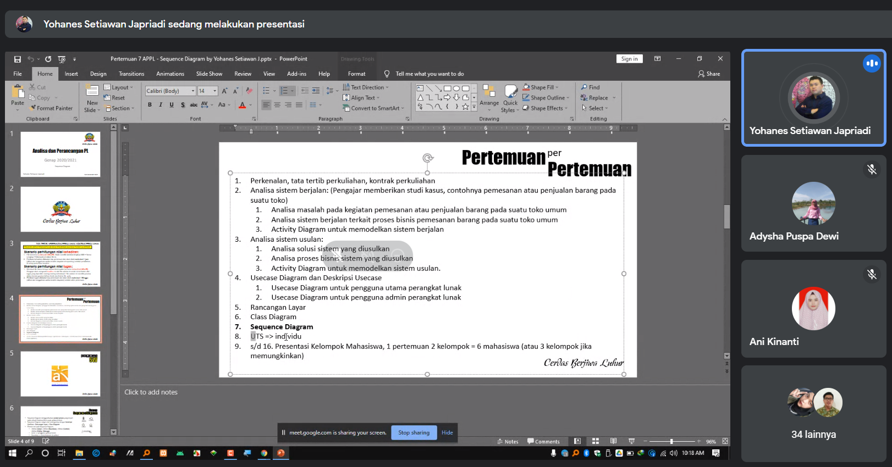
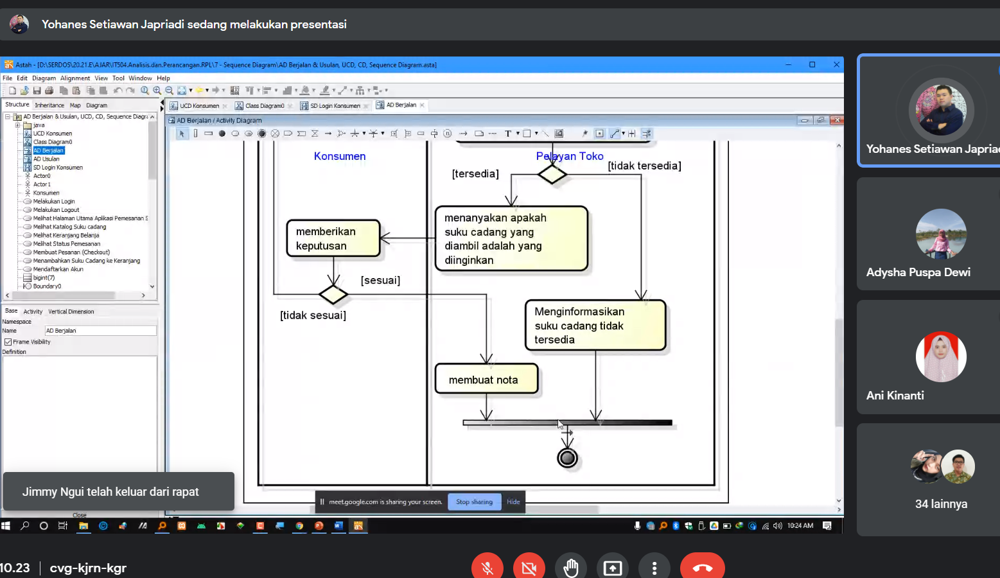
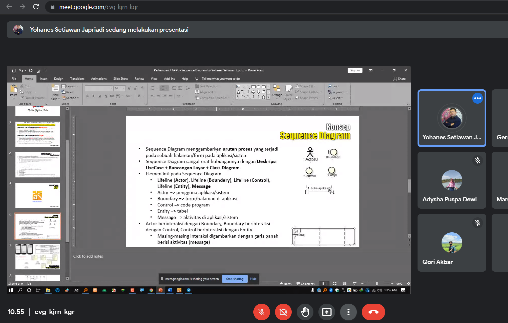
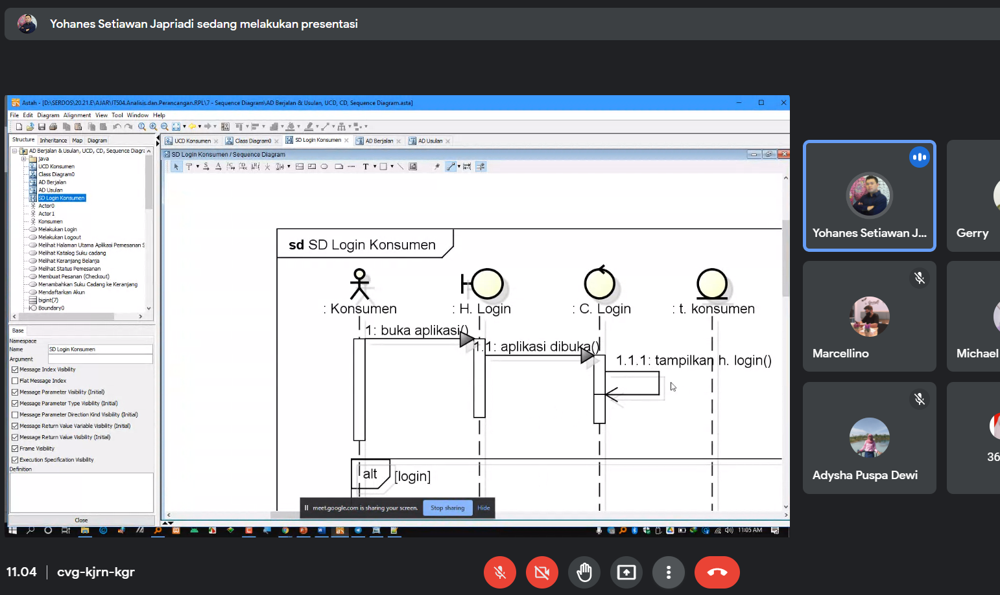
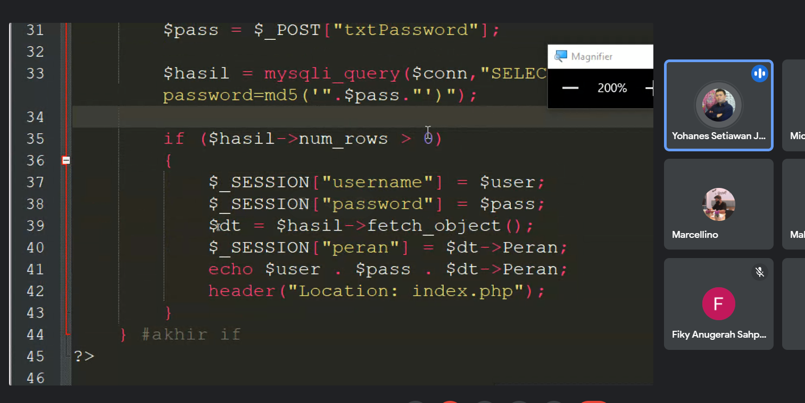
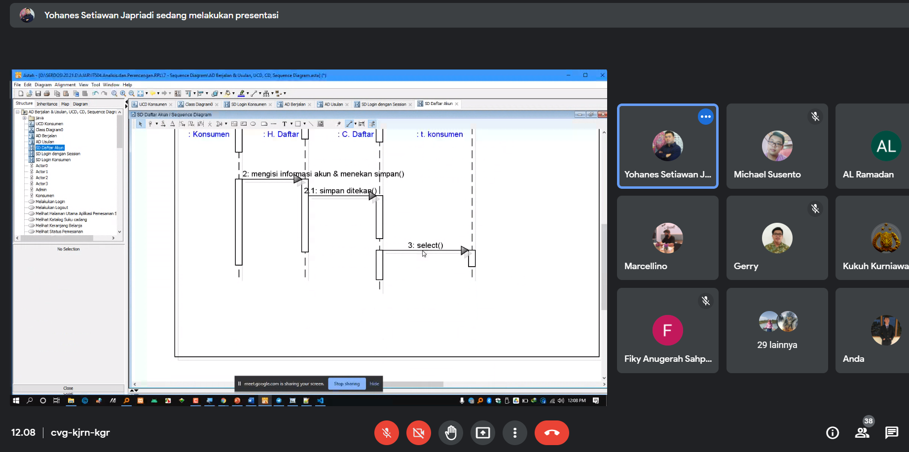
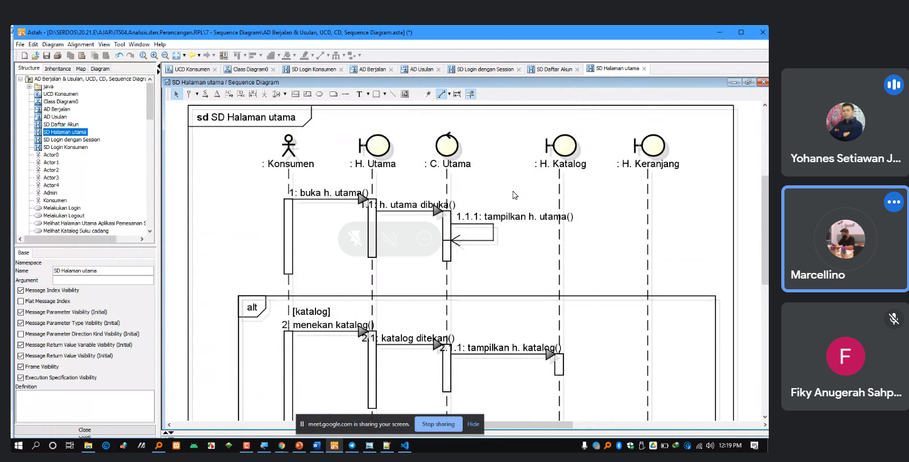

Selamat Siang Pak :)
Nama Lengkap: Livren Sandi
NIM: 1811500097
kelompok: TI6A
Hasil saya menyadur pertemuan ke 7:
- Mengingat kembali Activity Diagram
- Mengingat kembali Diagram Class
- Mengingat kembali Usecase Diagram
- Memahami tentang Sequence Diagram
- Membuat Sequence Diagram
Hasil file project astah Diagram Class Download
Gambar Diagram CLass: 
Screnshot materi yang diajarkan:






